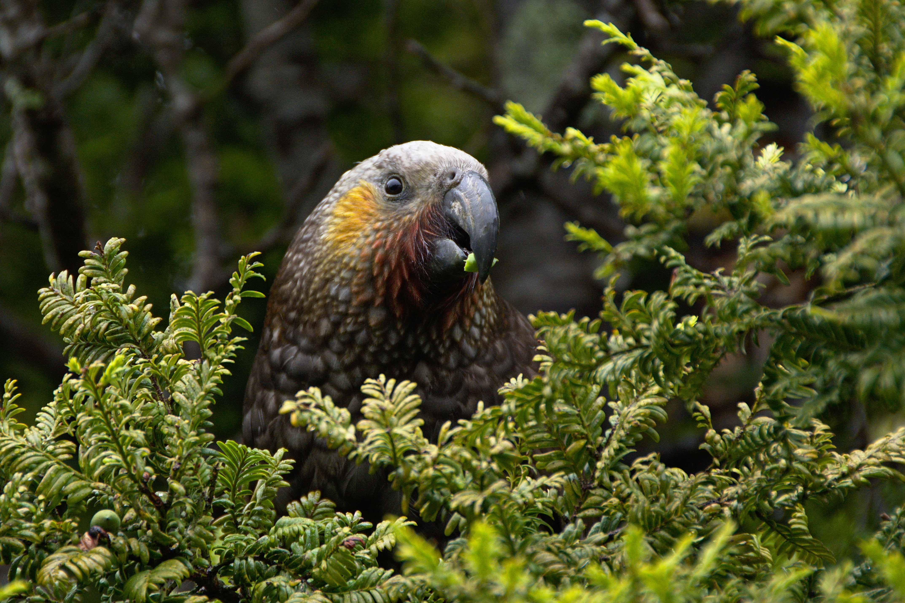

A strategic plan developed by the Biodiversity Research Center of the Californias (BRCC) and adopted by the Museum’s Board of Directors defines the BRCC's mission and region.
The Museum conducts expeditions and other field research along the Baja California peninsula, which is a major portion of our area of emphasis. Museum scientists often work with specialists in different disciplines from various institutions in the United States and Mexico.

Paleo Services is a consulting arm of the Museum specializing in the collection, salvage, preparation, and curation of paleontological resources (fossils) from development-slated acreage. Services also include record searches, paleontological resource assessment of properties, paleontological mitigation plans, and more.
Picture a mass of hot molten magma spreading below the Earth’s surface. As it cools slowly into solid rock, steam concentrates into trapped pockets that cool slowly over millennia. Geologists know these pockets are where to find amazing minerals such as tourmaline, topaz, and beryl, as well as common ones like quartz, and mica.

The complex geologic history of our region makes San Diego County mineral-rich and its terrain incredibly diverse. Plate tectonics and earthquakes play a big part in that story.